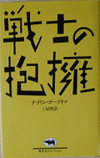
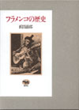
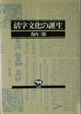
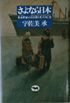
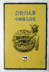
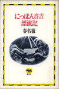
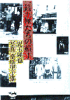
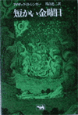
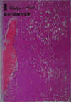

|  | 戦士の抱擁 ノーベル文学賞 |
「よい戦争」 ピュリツァー賞 |
|  | フラメンコの歴史 蘆原英了賞 |
 | 活字文化の誕生 日本出版学会賞 |
|  | さよなら日本ー 大宅壮一賞 |
 | 会社の人事 歴程賞 |
|  | にっぽん 大宅壮一賞・日本ノンフィクション賞 |
英国鉄道物語 毎日出版文化賞 |
|  | 一銭五厘 日本エッセイスト・クラブ賞 |
砂の荷物 ゴンクール賞 |
|  | 短かい金曜日・ アイザック・Ｂ ・シンガー 邦高忠二訳 1971年刊 品切 1984年刊 1030円 |
 | 長谷川四郎 毎日出版賞 |